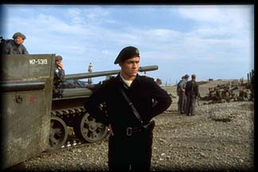

Vice Admiral Scott William Deederly
Club Position: Alumni
Service Record:
Joined club February 1997.
Elected to executive council, extended,
without ballot (March 1998).
Officially assumed executive position
Sept. 1997; promoted to full Lt.
Elected Secretary/Treasure and promoted
to Lt - Cmdr. in March 1999.
Pressganged into the crew
U.S.S. Inconceivable by Captain Leddy and Ensign Krista Leddy in February,
1997. As an Ensign, he loyally supported his captain and served his ship
until Captain Leddy left. In March 1998, Scott was pressganged once again
into becoming an officer and was promoted to Lt.; given greater responsibilities
with no pay increase (still $0.00/day). Disgruntled, Lt. Deederly welcomed
the new Captain Gillespie and his hidden agenda (whatever that was) and
came up with the name: The TLA (Trekker Liberation Army); soon to be changed
into the present and now former: TLF (Trekkers Liberation Front).
Lt. Deederly distinguished
himself on many occasions: first with a great feat of arctic navigation
& survival, unseen since the days of Shacklenton's Antarctic expeditions,
when he was order to go man the TLF front at "the convention" in October
1998. Later Lt. Deederly heroically (and without thought of himself)
held the line so that others could observe Ezeri Dax. In December
1998 Lt. Deederly was given the mission of organizing and commanding the
"Insurrection" campaign, witch he carried out with great success &
élan: bringing a larger force into the field than expected and bring
back much booty, plunder and glory (i.e. the 8 Trek movie box set Scott
won, the Kilingon knife Lars won and all the free tickets everyone got
that night).
But despite Lt. Deederly's
gallant efforts Captain Gillespie's war against the Federation (his hidden
agenda) soon resulted in defeat and heavy losses (i.e. most of the crew
either died, deserted or both) so disgruntled, again, Lt. Deederly was
pressganged, yet again, by then Lt. Cmdr Blunt and Lt. Elliot into a palace
coup that successfully overthrough the mad rule of Captain Gillespie.
Once in power Lt. Cmdr. Deederly began a series of reforms and financial
economies (with the approval of Captain Blunt), unseen since the days of
Klein and Harris (i.e. he got rid of the phone & the bill that went
with it). As well, Lt. Cmdr. Deederly was given full operational
command of Sub Space - 620's presence on the World Wide Web. And now
the saga continues. . .